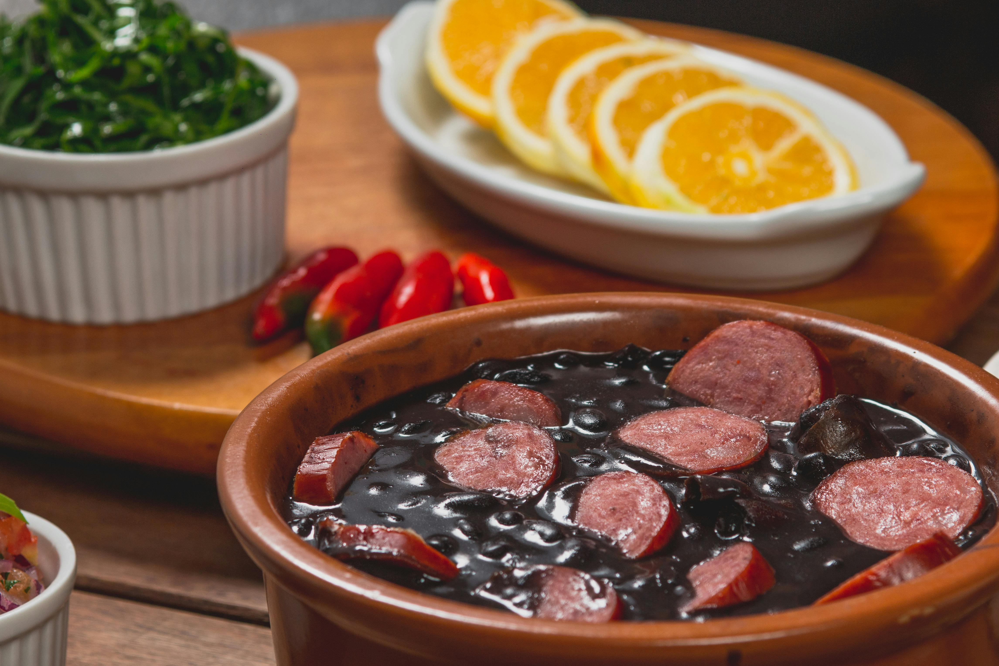

Lasanha
Home
Para uma feijoada de respeito, o segredo não é só o tempero,
mas a paciência no cozimento para o caldo ficar bem grosso.

Ingredientes
- 1kg de feijão preto.
- 500g de carne-seca (ou charque), 3
00g de lombo salgado, 200g de costelinha salgada.
- 2 gomos de linguiça calabresa, 1 paio, 200g de bacon grosso.
- 2 cebolas grandes picadas, 6 dentes de alho amassados, 4 folhas de louro, pimenta-do-reino e sal (se precisar).
Modo de preparo:
- Corte as carnes salgadas em cubos médios.
- Corte as carnes salgadas em cubos médios.
- Deixe-as de molho em água fria por 24 horas, trocando a água pelo menos 4 vezes.
- A União: Junte as carnes cozidas, a calabresa, o paio e o bacon à panela do feijão. Deixe cozinhar em fogo baixo, sem pressão, por uns 40 minutos. O segredo é o caldo engrossar naturalmente.
- O Refogado (O Toque Final): Em uma frigideira à parte, frite o alho e a cebola com um pouco de gordura do bacon. Pegue uma concha de grãos de feijão da panela, amasse-os nessa frigideira com o tempero e volte tudo para a panela principal. Isso dá uma cremosidade extra.